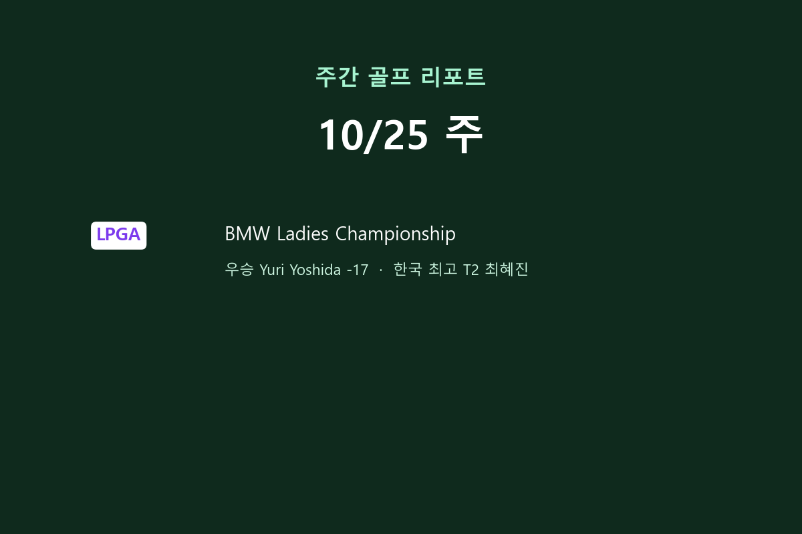

BMW 레이디스 챔피언십 요시다 우승, 최혜진·유해란 1타 차 공동 2위
10월 25일 주에는 LPGA 투어 BMW 레이디스 챔피언십이 10월 22일부터 25일까지 파인비치 골프링크스(파72)에서 열렸습니다. 일본의 유리 요시다가 합계 17언더파로 우승했고, 최혜진과 유해란이 1타 뒤진 공동 2위에 올랐습니다. 톱10에 한국 선수 5명이 이름을 올린 이번 대회를 순위와 라운드별 타수 중심으로 정리합니다.
LPGA 투어 · 유리 요시다 17언더파 우승, 최혜진·유해란 1타 차 공동 2위
⛳ BMW Ladies Championship — 2026-10-22~10-25 · Pine Beach Golf Links · 파 72 · 총상금 $2,350,000

유리 요시다(Yuri Yoshida)는 66-69-68-68타, 합계 271타(17언더파)로 우승해 총상금 235만 달러 가운데 우승 상금 35만 2,500달러를 받았습니다. 네 라운드를 모두 60타대로 마친 꾸준함이 돋보였습니다. 최혜진과 유해란이 16언더파로 1타 뒤진 공동 2위였고, 상금은 각각 18만 3,024달러입니다. 김민솔·김효주가 15언더파 공동 4위, 하타오카 나사·조디 이워트 섀도프·카를로타 시간다·그레이스 김이 14언더파 공동 6위, 김민선이 13언더파 단독 10위로 뒤를 이었습니다.

라운드별 타수를 보면 승부는 마지막 날 갈렸습니다. 유해란은 1라운드 67타에 이어 2라운드 64타를 쳐 36홀 13언더파를 만들었고, 3라운드 68타로 17언더파까지 달려 요시다·최혜진(13언더파)보다 4타 앞선 채 최종 라운드를 시작했습니다. 그러나 4라운드에 73타로 1타를 잃었고, 요시다는 68타로 4타를 줄여 1타 차 역전 우승을 거뒀습니다. 최혜진도 1라운드 71타로 출발한 뒤 66-66-69타로 순위를 끌어올려 공동 2위까지 올라섰습니다.
한국 선수 성적
| 순위 | 선수 | 합계 | 1R | 2R | 3R | 4R | 상금 |
|---|---|---|---|---|---|---|---|
| T2 | 최혜진 | -16 | 71 | 66 | 66 | 69 | $183,024 |
| T2 | 유해란 | -16 | 67 | 64 | 68 | 73 | $183,024 |
| T4 | 김민솔 | -15 | 70 | 66 | 70 | 67 | $107,439 |
| T4 | 김효주 | -15 | 69 | 69 | 67 | 68 | $107,439 |
| 10 | 김민선 | -13 | 69 | 64 | 72 | 70 | $47,041 |
| T11 | 박민지 | -12 | 70 | 68 | 65 | 73 | $39,519 |
| T15 | 이예원 | -11 | 72 | 69 | 70 | 66 | $28,689 |
| T15 | 유현조 | -11 | 70 | 67 | 73 | 67 | $28,689 |
| T15 | 윤이나 | -11 | 72 | 67 | 68 | 70 | $28,689 |
| T23 | 전인지 | -9 | 72 | 70 | 70 | 67 | $21,798 |
| T23 | 임진희 | -9 | 71 | 69 | 70 | 69 | $21,798 |
| T23 | 박보겸 | -9 | 71 | 65 | 73 | 70 | $21,798 |
| T23 | 김민주 | -9 | 69 | 66 | 69 | 75 | $21,798 |
| T29 | 전지원 | -8 | 70 | 68 | 68 | 74 | $17,887 |
| T34 | 황유민 | -6 | 74 | 70 | 70 | 68 | $13,996 |
| T34 | 이미향 | -6 | 73 | 70 | 71 | 68 | $13,996 |
| T34 | 안나린 | -6 | 74 | 68 | 72 | 68 | $13,996 |
| T34 | Seoah Kim | -6 | 75 | 66 | 71 | 70 | |
| T41 | Minji Kang | -5 | 72 | 67 | 74 | 70 | $11,150 |
| T46 | 장은수 | -4 | 73 | 72 | 71 | 68 | $9,524 |
| T46 | 양희영 | -4 | 69 | 70 | 74 | 71 | $9,524 |
| T49 | 김아림 | -3 | 71 | 75 | 71 | 68 | $8,072 |
| T49 | 유서연 | -3 | 71 | 70 | 71 | 73 | $8,072 |
| T55 | 김세영 | -2 | 72 | 67 | 77 | 70 | $6,504 |
| T55 | 박혜준 | -2 | 73 | 69 | 73 | 71 | $6,504 |
| T62 | 이다연 | -1 | 72 | 69 | 75 | 71 | $5,401 |
| T62 | 전예성 | -1 | 71 | 68 | 74 | 74 | $5,401 |
| T69 | 최예림 | +1 | 71 | 72 | 72 | 74 | $4,820 |
| T74 | 주수빈 | +3 | 78 | 70 | 73 | 70 | $4,388 |
| 78 | 신지은 | +5 | 71 | 74 | 76 | 72 | $4,250 |
한국 선수는 톱10에 5명이 들었습니다. 최혜진(71-66-66-69)과 유해란(67-64-68-73)이 16언더파 공동 2위, 김민솔(70-66-70-67)과 김효주(69-69-67-68)가 15언더파 공동 4위, 김민선(69-64-72-70)이 13언더파 10위입니다. 김민솔은 최종 라운드에 67타로 5타를 줄였는데, 이는 한국 상위권 선수 가운데 가장 좋은 마지막 날 기록입니다. 김효주도 4라운드 68타로 3라운드보다 순위를 끌어올렸습니다.
그 밖에 박민지가 3라운드 65타로 13언더파까지 올랐다가 마지막 날 73타를 쳐 12언더파 공동 11위로 마쳤습니다. 이예원(최종 라운드 66타)·유현조·윤이나가 11언더파 공동 15위, 전인지·임진희·박보겸·김민주가 9언더파 공동 23위를 기록했습니다. 지난해 우승자 김세영은 3라운드 77타가 아쉬웠고 2언더파 공동 55위로 대회를 마쳤습니다. 기록에 오른 한국 선수는 모두 30명입니다.
전체 순위: BMW Ladies Championship 리더보드
이번 주에는 마지막 날 한 라운드가 우승자를 바꿀 수 있다는 점이 라운드별 타수에 그대로 드러났습니다. 다음 주에도 대회 기록을 바탕으로 한국 선수들의 성적을 정리하겠습니다.
※ 순위·스코어는 ESPN 공개 리더보드와 KLPGA 공식 리더보드 기준이며, 그래프와 표는 이 기록으로 직접 만들었습니다. 영상은 각 투어 공식 유튜브 채널의 퍼가기입니다.